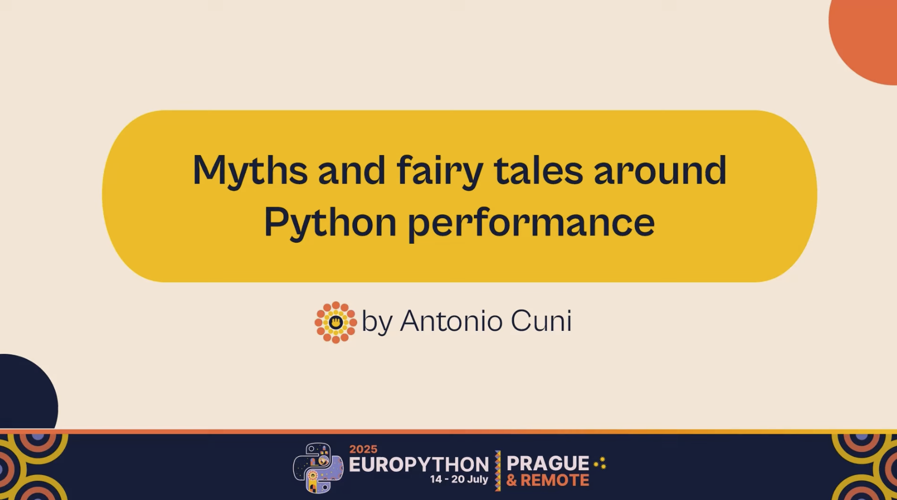
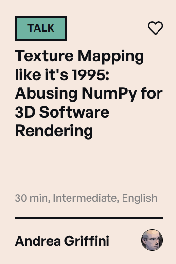
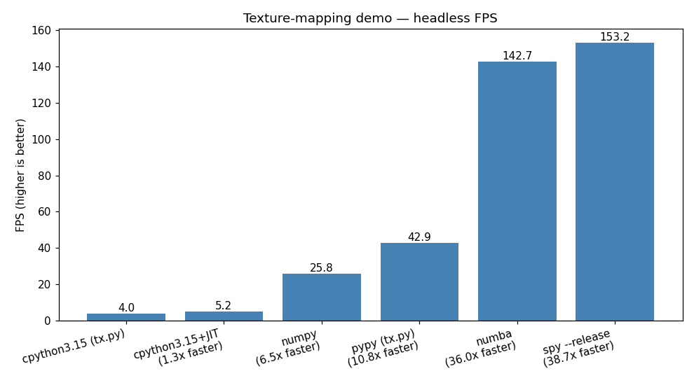

<!-- -*- mode: markdown -*- --> <style> :root { --r-main-font-size: 40px; /* the default is 40px */ } .reveal h1, .reveal h2, .reveal h3, .reveal h4, .reveal h5 { text-transform: none; } .reveal h1, .reveal h2, .reveal h3, .reveal h4, .reveal h5 { text-transform: none; } .reveal pre { width: var(--code-max-width, 100%); max-width: 100%; font-size: var(--code-font-size, 1em); } .reveal pre code { padding: 5px; overflow: auto; max-height: var(--code-max-height, 600px); word-wrap: normal; } .big { font-size: 2.5em; } .small { font-size: 0.8em; } .main-size { font-size: var(--r-main-font-size); } </style> <!-- you can also use this comment to set a custom html title (remove the xxx) --> <!-- title: SPy: high-level Python, low-level performance, no overhead --> # SPy 🥸 ## High-level Python, low-level performance, no overhead <p class="small"> <a href="https://antocuni.eu/talk/2026/07/spy-europython/"> <qr-code data="https://antocuni.eu/talk/2026/07/spy-europython/" format="svg" modulesize="8" margin="4"></qr-code> <br> antocuni.eu/talk/2026/07/spy-europython/ </a> <br> </p> --- ## One year ago... <div style="display: flex; justify-content: space-around; gap: 2em;"> <a href="https://youtu.be/X3QbMaEIpt0?si=f9HHhF7GNRWv60yf"><p></p></a> <p class="small"> <a href="https://youtu.be/X3QbMaEIpt0?si=f9HHhF7GNRWv60yf"> <qr-code data="https://youtu.be/X3QbMaEIpt0?si=f9HHhF7GNRWv60yf" format="svg" modulesize="8" margin="4"></qr-code> <br> youtu.be/X3QbMaEIpt0?si=f9HHhF7GNRWv60yf </a> <br> </p> </div> --- ## Python is slow, TL;DR * Everything is dynamic - The world can change at any time * Compilers have a hard time - performance cliffs - unpredictable performance - optimization chasing * ... but we like dynamicity --- ## Part 1: What is SPy? <div class="fragment"> - Statically typed - Safe, Fast - Interpreted **and** compiled - Low level **and** high level - Variant - Of Python </div> --- ## Variant? - TL;DR: you cannot be fast without breaking _some_ backward compatibility - Source: I have tried for 20 years (and I'm not the only one) - Stop rewriting in Rust/go/whatever, let's rewrite in SPy --- ## Statically typed, safe, fast - Python typing it's an afterthought - Not really safe - Doesn't help with performance - SPy type system designed from scratch for safety and performance --- ## Interpreted and compiled - Python compilers usually (always?) diverges from CPython interp semantics - SPy interp for development and debugging - `spdb` - SPy compiler for speed - Designed to give the exact same results --- ## Low level and high level - **The two language problem** - High level, easy, nice, slow - Python - Low level, harder, fast - C / C++ / rust / cython / ... - SPy: low level core, zero cost abstractions --- ## ... of Python - SPy supports (with some twists): - Metaclasses - Decorators - Descriptor protocol - `__getattribute__` - dynamic dispatch (opt-in) - ... - It _feels_ like Python --- ## Goals - Easy to understand, easy to implement - Predictable performance - One language, two levels - End users: no big difference - Power users / library writers: you are at the right talk ### Non-goals - 100% compatibility with CPython. --- ## Goals **Blog**: Inside SPy part 1: motivation and goals <p class="small"> <a href="https://antocuni.eu/2025/10/29/inside-spy-part-1-motivations-and-goals/"> <qr-code data="https://antocuni.eu/2025/10/29/inside-spy-part-1-motivations-and-goals/" format="svg" modulesize="8" margin="4"></qr-code> <br> antocuni.eu/2025/10/29/inside-spy-part-1-motivations-and-goals/ </a> <br> </p> --- ## Demo <div style="display: flex; justify-content: space-around; gap: 2em;"> <div> PyCon Italy 2027 <br> <p></p> </div> <p class="small"> <a href="https://github.com/spylang/demos/tree/main/texture-mapping"> <qr-code data="https://github.com/spylang/demos/tree/main/texture-mapping" format="svg" modulesize="8" margin="4"></qr-code> <br> github.com/spylang/demos/tree/main/texture-mapping </a> <br> </p> </div> --- <p></p> --- ## Part 2: A taste of SPy - Just some key ideas - Not the full story - Intuition of how it works - **Blog**: Inside SPy part 2: Language semantics <p class="small"> <a href="https://antocuni.eu/2026/03/25/inside-spy-part-2-language-semantics/"> <qr-code data="https://antocuni.eu/2026/03/25/inside-spy-part-2-language-semantics/" format="svg" modulesize="8" margin="4"></qr-code> <br> antocuni.eu/2026/03/25/inside-spy-part-2-language-semantics/ </a> <br> </p> --- ## General architecture * Interpreter: AST-based * <!-- .element: class="fragment fade-out" data-fragment-index="0" --> Magic 🧙 * <!-- .element: class="fragment" data-fragment-index="0" --> <b>Redshift</b> - AST -> partial evaluation -> lowered AST - <span style="color: blue">blue</span> / <span style="color: red">red</span> ➜ <span style="color: red">red</span> * Compiler - <span class="fragment" data-fragment-index="0">lowered</span> AST ➜ C ➜ `cc` --- ## Execution phases * Import time - Statically resolve modules and imports - Everything is mutable "as usual" - Metaclasses, decorators, monkey-patching, ... * --- FREEZE --- * <!-- .element: class="fragment" --> (Redshift) * Runtime --- ## SPy playground <p class="small"> <a href="https://spylang.github.io/spy/"> <qr-code data="https://spylang.github.io/spy/" format="svg" modulesize="8" margin="4"></qr-code> <br> spylang.github.io/spy/ </a> <br> </p> --- ## Redshifting ```python title="add.spy" autowrite def calc(x: int, y: int) -> int: return x + y + 2 * 3 def main() -> None: a = calc(40, 2) b = 40 + 2 print("Hello EuroPython 🇪🇺!") ``` --- ## Redshifting <!-- .slide: style="--code-font-size: 0.8em" --> <pre style="background:#2E3436;color:#d4d4d4;border-radius:6px;padding:1em 1.2em;font-family:'Fira Mono','Cascadia Code','Consolas',monospace;line-height:1.4;margin:0.5em auto;white-space:pre;text-align:left;overflow:auto;max-height:var(--code-max-height,450px);box-sizing:border-box;">$ spy colorize add.spy def calc(x: int, y: int) -> int: return <span style="background: #d78787"></span><span style="color: #2E3436; background: #d78787">x + y + </span><span style="background: #87afd7"></span><span style="color: #2E3436; background: #87afd7">2 * 3</span> def main() -> None: <span style="background: #d78787"></span><span style="color: #2E3436; background: #d78787">a = </span><span style="background: #87afd7"></span><span style="color: #2E3436; background: #87afd7">calc</span><span style="background: #d78787"></span><span style="color: #2E3436; background: #d78787">(</span><span style="background: #87afd7"></span><span style="color: #2E3436; background: #87afd7">40</span><span style="background: #d78787"></span><span style="color: #2E3436; background: #d78787">, </span><span style="background: #87afd7"></span><span style="color: #2E3436; background: #87afd7">2</span><span style="background: #d78787"></span><span style="color: #2E3436; background: #d78787">)</span> <span style="background: #87afd7"></span><span style="color: #2E3436; background: #87afd7">b = 40 + 2</span> <span style="background: #87afd7"></span><span style="color: #2E3436; background: #87afd7">print</span><span style="background: #d78787"></span><span style="color: #2E3436; background: #d78787">(</span><span style="background: #87afd7"></span><span style="color: #2E3436; background: #87afd7">"Hello EuroPython 🇪🇺!") </span></pre> <pre style="background:#2E3436;color:#d4d4d4;border-radius:6px;padding:1em 1.2em;font-family:'Fira Mono','Cascadia Code','Consolas',monospace;line-height:1.4;margin:0.5em auto;white-space:pre;text-align:left;overflow:auto;max-height:var(--code-max-height,450px);box-sizing:border-box;">$ spy redshift add.spy <span style="font-weight: bold; color: #BD93F9">def</span> calc(x: <span style="font-weight: bold; color: #FF79C6">i32</span>, y: <span style="font-weight: bold; color: #FF79C6">i32</span>) -> <span style="font-weight: bold; color: #FF79C6">i32</span>: <span style="font-weight: bold; color: #BD93F9">return</span> x + y + <span style="font-weight: bold; color: #F1FA8C">6</span> <span style="font-weight: bold; color: #BD93F9">def</span> main() -> <span style="font-weight: bold; color: #BD93F9">None</span>: a: <span style="font-weight: bold; color: #FF79C6">i32</span> = <span style="font-weight: bold; color: #FF79C6">`add::calc`</span>(<span style="font-weight: bold; color: #F1FA8C">40</span>, <span style="font-weight: bold; color: #F1FA8C">2</span>) <span style="font-weight: bold; color: #FF79C6">`_print::println[str]`</span>(<span style="font-weight: bold; color: #50FA7B">'Hello EuroPython 🇪🇺!'</span>)</pre> --- ## `@blue` functions ```python title="bluefunc.spy" autowrite @blue def calc(x: int, y: int) -> int: return x + y + 2 * 3 def main() -> None: a = calc(40, 2) print(a) ``` --- <!-- .slide: style="--code-font-size: 0.8em" --> <pre style="background:#2E3436;color:#d4d4d4;border-radius:6px;padding:1em 1.2em;font-family:'Fira Mono','Cascadia Code','Consolas',monospace;line-height:1.4;margin:0.5em auto;white-space:pre;text-align:left;overflow:auto;max-height:var(--code-max-height,450px);box-sizing:border-box;">$ spy colorize bluefunc.spy @blue def calc(x: int, y: int) -> int: return x + y + 2 * 3 def main() -> None: <span style="background: #87afd7"></span><span style="color: #2E3436; background: #87afd7">a = calc(40, 2)</span> <span style="background: #87afd7"></span><span style="color: #2E3436; background: #87afd7">print</span><span style="background: #d78787"></span><span style="color: #2E3436; background: #d78787">(</span><span style="background: #87afd7"></span><span style="color: #2E3436; background: #87afd7">a</span><span style="background: #d78787"></span><span style="color: #2E3436; background: #d78787">)</span></pre> <pre style="background:#2E3436;color:#d4d4d4;border-radius:6px;padding:1em 1.2em;font-family:'Fira Mono','Cascadia Code','Consolas',monospace;line-height:1.4;margin:0.5em auto;white-space:pre;text-align:left;overflow:auto;max-height:var(--code-max-height,450px);box-sizing:border-box;">$ spy redshift bluefunc.spy <span style="font-weight: bold; color: #BD93F9">def</span> main() -> <span style="font-weight: bold; color: #BD93F9">None</span>: <span style="font-weight: bold; color: #FF79C6">`_print::println[str]`</span>(<span style="font-weight: bold; color: #50FA7B">'48'</span>)</pre> --- ## Code specialization ```python title="make_adder.spy" autowrite @blue def make_adder(n): def impl(x: int) -> int: return x + n return impl add5 = make_adder(5) add7 = make_adder(7) def main() -> None: print(add5(10)) print(add7(20)) ``` --- <!-- .slide: style="--code-font-size: 0.8em; --code-max-height: 850px;" --> <pre style="background:#2E3436;color:#d4d4d4;border-radius:6px;padding:1em 1.2em;font-family:'Fira Mono','Cascadia Code','Consolas',monospace;line-height:1.4;margin:0.5em auto;white-space:pre;text-align:left;overflow:auto;max-height:var(--code-max-height,450px);box-sizing:border-box;">$ spy redshift make_adder.spy add5 = <span style="font-weight: bold; color: #FF79C6">`make_adder::make_adder::impl`</span> add7 = <span style="font-weight: bold; color: #FF79C6">`make_adder::make_adder::impl#1`</span> <span style="font-weight: bold; color: #BD93F9">def</span> <span style="font-weight: bold; color: #FF79C6">`make_adder::make_adder::impl`</span>(x: <span style="font-weight: bold; color: #FF79C6">i32</span>) -> <span style="font-weight: bold; color: #FF79C6">i32</span>: <span style="font-weight: bold; color: #BD93F9">return</span> x + <span style="font-weight: bold; color: #F1FA8C">5</span> <span style="font-weight: bold; color: #BD93F9">def</span> <span style="font-weight: bold; color: #FF79C6">`make_adder::make_adder::impl#1`</span>(x: <span style="font-weight: bold; color: #FF79C6">i32</span>) -> <span style="font-weight: bold; color: #FF79C6">i32</span>: <span style="font-weight: bold; color: #BD93F9">return</span> x + <span style="font-weight: bold; color: #F1FA8C">7</span> <span style="font-weight: bold; color: #BD93F9">def</span> main() -> <span style="font-weight: bold; color: #BD93F9">None</span>: <span style="font-weight: bold; color: #FF79C6">`_print::println[i32]`</span>(<span style="font-weight: bold; color: #FF79C6">`make_adder::make_adder::impl`</span>(<span style="font-weight: bold; color: #F1FA8C">10</span>)) <span style="font-weight: bold; color: #FF79C6">`_print::println[i32]`</span>(<span style="font-weight: bold; color: #FF79C6">`make_adder::make_adder::impl#1`</span>(<span style="font-weight: bold; color: #F1FA8C">20</span>))</pre> --- ## Generics <!-- .slide: style="--code-font-size: 0.8em" --> ```python title="add2.spy" autowrite @blue.generic def add(T): def impl(x: T, y: T) -> T: return x + y return impl def sub[T](x: T, y: T) -> T: return x - y def main() -> None: print(add[str]("Hello ", "EuroPython")) print(add[int](1, 2)) print(sub[int](3, 2)) ``` --- <!-- .slide: style="--code-font-size: 0.8em; --code-max-height: 850px;" --> <pre style="background:#2E3436;color:#d4d4d4;border-radius:6px;padding:1em 1.2em;font-family:'Fira Mono','Cascadia Code','Consolas',monospace;line-height:1.4;margin:0.5em auto;white-space:pre;text-align:left;overflow:auto;max-height:var(--code-max-height,450px);box-sizing:border-box;">$ spy redshift add2.spy <span style="font-weight: bold; color: #BD93F9">def</span> main() -> <span style="font-weight: bold; color: #BD93F9">None</span>: <span style="font-weight: bold; color: #FF79C6">`_print::println[str]`</span>(<span style="font-weight: bold; color: #FF79C6">`add2::add[str]`</span>(<span style="font-weight: bold; color: #50FA7B">'Hello '</span>, <span style="font-weight: bold; color: #50FA7B">'EuroPython'</span>)) <span style="font-weight: bold; color: #FF79C6">`_print::println[i32]`</span>(<span style="font-weight: bold; color: #FF79C6">`add2::add[i32]`</span>(<span style="font-weight: bold; color: #F1FA8C">1</span>, <span style="font-weight: bold; color: #F1FA8C">2</span>)) <span style="font-weight: bold; color: #FF79C6">`_print::println[i32]`</span>(<span style="font-weight: bold; color: #FF79C6">`add2::sub[i32]`</span>(<span style="font-weight: bold; color: #F1FA8C">3</span>, <span style="font-weight: bold; color: #F1FA8C">2</span>)) <span style="font-weight: bold; color: #BD93F9">def</span> <span style="font-weight: bold; color: #FF79C6">`add2::add[str]`</span>(x: <span style="font-weight: bold; color: #FF79C6">str</span>, y: <span style="font-weight: bold; color: #FF79C6">str</span>) -> <span style="font-weight: bold; color: #FF79C6">str</span>: <span style="font-weight: bold; color: #BD93F9">return</span> <span style="font-weight: bold; color: #FF79C6">`_str::methods::__add__`</span>(x, y) <span style="font-weight: bold; color: #BD93F9">def</span> <span style="font-weight: bold; color: #FF79C6">`add2::add[i32]`</span>(x: <span style="font-weight: bold; color: #FF79C6">i32</span>, y: <span style="font-weight: bold; color: #FF79C6">i32</span>) -> <span style="font-weight: bold; color: #FF79C6">i32</span>: <span style="font-weight: bold; color: #BD93F9">return</span> x + y <span style="font-weight: bold; color: #BD93F9">def</span> <span style="font-weight: bold; color: #FF79C6">`add2::sub[i32]`</span>(x: <span style="font-weight: bold; color: #FF79C6">i32</span>, y: <span style="font-weight: bold; color: #FF79C6">i32</span>) -> <span style="font-weight: bold; color: #FF79C6">i32</span>: <span style="font-weight: bold; color: #BD93F9">return</span> x - y</pre> --- ## Opt-in dynamic dispatch (1) ```python title="dyn1.spy" autowrite def add(x: object, y: object) -> object: return x + y def main() -> None: print(add(1, 2)) ``` --- <!-- .slide: style="--code-font-size: 0.6em; --code-max-height: 850px;" --> <pre style="background:#2E3436;color:#d4d4d4;border-radius:6px;padding:1em 1.2em;font-family:'Fira Mono','Cascadia Code','Consolas',monospace;line-height:1.4;margin:0.5em auto;white-space:pre;text-align:left;overflow:auto;max-height:var(--code-max-height,450px);box-sizing:border-box;">$ spy dyn1.spy Traceback (most recent call last): * <span style="color: #FF79C6">dyn1::main</span> at /.../autorun/dyn1.spy:5 | print(add(1, 2)) | <span style="font-weight: bold; color: #FF5555"> |_______|</span> * <span style="color: #FF79C6">dyn1::add</span> at /.../autorun/dyn1.spy:2 | return x + y | <span style="font-weight: bold; color: #FF5555"> |___|</span> <span style="font-weight: bold; color: #FF5555">TypeError</span>: cannot do `object` + `object` | /.../autorun/dyn1.spy:2 | return x + y | <span style="font-weight: bold; color: #FF5555"> ^ this is `object`</span> | /.../autorun/dyn1.spy:2 | return x + y | <span style="font-weight: bold; color: #FF5555"> ^ this is `object`</span> | /.../autorun/dyn1.spy:2 | return x + y | <span style="font-weight: bold; color: #50FA7B"> |___| operator::ADD called here</span></pre> --- ## Opt-in dynamic dispatch (1) <!-- .slide: style="--code-font-size: 0.8em" --> ```python title="dyn2.spy" autowrite def add(x: dynamic, y: dynamic) -> dynamic: return x + y def main() -> None: print(add(1, 2)) ``` <pre style="background:#2E3436;color:#d4d4d4;border-radius:6px;padding:1em 1.2em;font-family:'Fira Mono','Cascadia Code','Consolas',monospace;line-height:1.4;margin:0.5em auto;white-space:pre;text-align:left;overflow:auto;max-height:var(--code-max-height,450px);box-sizing:border-box;">$ spy dyn2.spy 3</pre> --- ## Low-level core - Northern star ⭐: implement builtins in `*.spy`: - `list`, `dict`, `str`, `tuple`, ... - Plain user code, no special compiler support - If you can write a fast `dict`, you can also write a fast `ndarray` or `DataFrame` --- ## Low-level SPy <!-- .slide: style="--code-font-size: 0.8em; --code-max-height: 850px;" --> ```python # stdlib/_list.spy (simplified) from unsafe import gc_alloc, gc_ptr @blue.generic def list(T): @struct class ListData: length: i32 capacity: i32 items: gc_ptr[T] @struct class _ListImpl: __ll__: gc_ptr[ListData] def __new__() -> _ListImpl: data = gc_alloc[ListData](1) data.length = 0 data.capacity = 4 data.items = gc_alloc[T](4) return _ListImpl.__make__(data) def append(self, item: T) -> None: ll = self.__ll__ if ll.length >= ll.capacity: old_capacity = ll.capacity new_capacity = old_capacity * 2 new_items = gc_alloc[T](new_capacity) i = 0 while i < ll.length: new_items[i] = ll.items[i] i = i + 1 ll.items = new_items ll.capacity = new_capacity ll.items[ll.length] = item ll.length = ll.length + 1 def __len__(self) -> i32: return self.__ll__.length def __getitem__(self, i: int) -> T: ll = self.__ll__ if i < 0: i = i + ll.length if i < 0: raise IndexError if i >= ll.length: raise IndexError return ll.items[i] return _ListImpl ``` --- ## Let's break it! <!-- .slide: style="--code-font-size: 0.8em; --code-max-height: 850px;" --> ```python title="broken_list.spy" autowrite from unsafe import gc_alloc, gc_ptr def main() -> None: l = MyList[int]() l.append(42) l.append(43) l.append(44) print(l[0], l[1], l[2]) @blue.generic def MyList(T): @struct class ListData: length: i32 capacity: i32 items: gc_ptr[T] @struct class _ListImpl: __ll__: gc_ptr[ListData] def __new__() -> _ListImpl: data = gc_alloc[ListData](1) data.length = 0 data.capacity = 4 data.items = gc_alloc[T](2) # <==== BUG! return _ListImpl.__make__(data) def append(self, item: T) -> None: ll = self.__ll__ if ll.length >= ll.capacity: old_capacity = ll.capacity new_capacity = old_capacity * 2 new_items = gc_alloc[T](new_capacity) i = 0 while i < ll.length: new_items[i] = ll.items[i] i = i + 1 ll.items = new_items ll.capacity = new_capacity ll.items[ll.length] = item ll.length = ll.length + 1 def __len__(self) -> i32: return self.__ll__.length def __getitem__(self, i: int) -> T: ll = self.__ll__ if i < 0: i = i + ll.length if i < 0: raise IndexError if i >= ll.length: raise IndexError return ll.items[i] return _ListImpl ``` --- <!-- .slide: style="--code-font-size: 0.7em; --code-max-height: 850px;" --> ## Let's break it <pre style="background:#2E3436;color:#d4d4d4;border-radius:6px;padding:1em 1.2em;font-family:'Fira Mono','Cascadia Code','Consolas',monospace;line-height:1.4;margin:0.5em auto;white-space:pre;text-align:left;overflow:auto;max-height:var(--code-max-height,450px);box-sizing:border-box;">$ spy broken_list.spy --spdb Traceback (most recent call last): * broken_list::main at /.../autorun/broken_list.spy:7 | l.append(44) | |__________| * broken_list::MyList[i32]::_ListImpl::append at /.../autorun/broken_list.spy:45 | ll.items[ll.length] = item | |________________________| PanicError: ptr_store out of bounds: 0x10013f8[2] (upper bound: 2) | /.../autorun/broken_list.spy:45 | ll.items[ll.length] = item | |______| --- entering applevel debugger (post-mortem) --- [1] broken_list::MyList[i32]::_ListImpl::append at /.../autorun/broken_list.spy:45 | ll.items[ll.length] = item | |________________________| (spdb🥸)</pre> --- ## Metafunctions <!-- .slide: style="--code-max-width: 50%" --> - `getitem(int)` vs `getitem(slice)` - Python: runtime dispatch - SPy: compile time dispatch ```python def main() -> None: l = [1, 2, 3, 4, 5] print(l[0]) print(l[:-1]) ``` --- <!-- .slide: style="--code-max-height: 850px; --code-font-size: 0.8em" --> ```python # stdlib/_list.spy @blue.generic def list(T): @struct class _ListImpl: __ll__: gc_ptr[ListData] @blue.metafunc def __getitem__(m_self, m_x: MetaArg): if m_x.static_type == i32: return OpSpec(_ListImpl._getitem_int) elif m_x.static_type == Slice: return OpSpec(_ListImpl._getitem_slice) else: raise TypeError( "Subscript to list must be i32 or Slice, got " + str(m_x) ) def _getitem_int(self, i: int) -> T: ll = self.__ll__ if i < 0: i = i + ll.length if i < 0: raise IndexError if i >= ll.length: raise IndexError return ll.items[i] def _getitem_slice(self, s: Slice) -> _ListImpl: ... ``` --- ```python title="getitem_slice.spy" autowrite def main() -> None: l = [1, 2, 3, 4, 5] print(l[0]) print(l[:-1]) ``` <pre style="background:#2E3436;color:#d4d4d4;border-radius:6px;padding:1em 1.2em;font-family:'Fira Mono','Cascadia Code','Consolas',monospace;line-height:1.4;margin:0.5em auto;white-space:pre;text-align:left;overflow:auto;max-height:var(--code-max-height,450px);box-sizing:border-box;">$ spy redshift getitem_slice.spy def main() -> None: l: `list[i32]` = `list[i32]::_push`(`list[i32]::_push`(`list[i32]::_push`(`list[i32]::_push`(`list[i32]::_push`(`list[i32]::new`(), 1), 2), 3), 4), 5) `_print::println[i32]`(`list[i32]::_getitem_int`(l, 0)) `_print::println[list[i32]]`(`list[i32]::_getitem_slice`(l, `slice::__new__::impl6`(-1)))</pre> --- ## Climbing the abstraction ladder - Low-level fast core + zero cost abstractions - ➡️ High-level fast APIs - Advanced users - use SPy to write powerful and fast libraries - Enjoy a nicer language - End users - mostly "the same python as ever" - no need to know about the advanced topics - you don't need to know C to use `numpy` --- ## Climbing the abstraction ladder - Some examples: - static dispatch of operations - don't allocate small structs - metaprogramming - blue values to "specialize" when possible --- ## Back to the demo <p class="small"> <a href="https://www.diffchecker.com/yhNaRrck/"> <qr-code data="https://www.diffchecker.com/yhNaRrck/" format="svg" modulesize="8" margin="4"></qr-code> <br> www.diffchecker.com/yhNaRrck/ </a> <br> </p> - `_array.spy`, `_list.spy`, `_tuple.spy`: pure applevel --- # Thanks!  SPy Contributors:  ---  --- # Give SPy a star ⭐ <p class="small"> <a href="https://github.com/spylang/spy/"> <qr-code data="https://github.com/spylang/spy/" format="svg" modulesize="8" margin="4"></qr-code> <br> github.com/spylang/spy/ </a> <br> </p> @antocuni - Join me at EuroPython sprints! --- # Backup slides --- ## Another Demo! - AWS lambda running on SPy - Demoware, from ~2 months ago - Requires a SPy branch with vibecoded experimental features. - This is **NOT** SPy running FastAPI - it's `SPyAPI` :) <div style="display: flex; justify-content: space-around; gap: 2em;"> <p class="small"> <a href="https://github.com/spylang/demos/tree/main/aws-lambda"> <qr-code data="https://github.com/spylang/demos/tree/main/aws-lambda" format="svg" modulesize="8" margin="4"></qr-code> <br> github.com/spylang/demos/tree/main/aws-lambda </a> <br> </p> <p class="small"> <a href="https://x5rdyhwfridmtics2v7hup2sp40ydwhk.lambda-url.us-east-1.on.aws/"> <qr-code data="https://x5rdyhwfridmtics2v7hup2sp40ydwhk.lambda-url.us-east-1.on.aws/" format="svg" modulesize="8" margin="4"></qr-code> <br> x5rdyhwfridmtics2v7hup2sp40ydwhk.lambda-url.us-east-1.on.aws/ </a> <br> </p> </div> --- ## CPython version <!-- .slide: style="--code-font-size: 0.8em; --code-max-height: 850px;" --> ```python from fastapi import FastAPI, Query from fastapi.responses import HTMLResponse from mangum import Mangum CDN = '<link rel="stylesheet" href="https://cdn.jsdelivr.net/npm/bootstrap@5.3.3/dist/css/bootstrap.min.css">' app = FastAPI() @app.get("/", response_class=HTMLResponse) def index() -> str: return f"""<!doctype html> <html> <head>{CDN}<title>FastAPI Demo</title></head> <body class="container mt-5"> <h1>FastAPI on AWS Lambda</h1> <form method="get" action="/greet"> <label class="form-label">What's your name?</label> <input class="form-control mb-2" type="text" name="name" autofocus> <button class="btn btn-primary" type="submit">Say hello</button> </form> </body> </html>""" @app.get("/greet", response_class=HTMLResponse) def greet(name: str = Query(default="World")) -> str: return f"""<!doctype html> <html> <head>{CDN}<title>Hello, {name}!</title></head> <body class="container mt-5"> <h1>Hello, {name}!</h1> <p>Greetings from a FastAPI Lambda.</p> <a href="/">← back home</a> </body> </html>""" # Mangum wraps the FastAPI ASGI app for Lambda's event/context interface. handler = Mangum(app) ``` --- ## SPy version <!-- .slide: style="--code-font-size: 0.8em; --code-max-height: 850px;" --> ```python from spyapi import SPyAPI CDN: str = '<link rel="stylesheet" href="https://cdn.jsdelivr.net/npm/bootstrap@5.3.3/dist/css/bootstrap.min.css">' app = SPyAPI() @app.get("/") def index() -> None: html = f""" <!doctype html> <html> <head>{CDN}<title>SPy Demo</title></head> <body class="container mt-5"> <h1>SPy 🥸 on AWS Lambda</h1> <form method="get" action="/greet"> <label class="form-label">What's your name?</label> <input class="form-control mb-2" type="text" name="name" autofocus> <button class="btn btn-primary" type="submit">Say hello</button> </form> </body> </html>""" app.response(200, html, "text/html; charset=utf-8") @app.get("/greet") def greet() -> None: name = app.get_query_param("name") html = f"""<!doctype html> <html> <head>{CDN}<title>Hello, {name}!</title></head> <body class="container mt-5"> <h1>Hello, {name}!</h1> <p>Greetings from a compiled SPy Lambda.</p> <a href="/">home</a> </body> </html>""" app.response(200, html, "text/html; charset=utf-8") def main() -> None: app.serve_forever() ``` --- # SPy vs CPython  --- # SPy vs Go vs Rust  --- # More examples --- ## More metafunctions <!-- .slide: style="--code-font-size: 0.8em" --> ```python title="metafunc.spy" autowrite from operator import OpSpec def main() -> None: l = [1, 2, 3] print(max(l)) print(max(10, 20)) @blue.metafunc def max(m_x, *args_m): T = m_x.static_type if len(args_m) == 0: itemT = get_item_type(T) return OpSpec(_max_list[itemT]) elif len(args_m) == 1: return OpSpec(_max2[T]) else: raise TypeError("Invalid overload for max") def _max_list[T](l: list[T]) -> T: return l[-1] # TODO: implement me :) def _max2[T](a: T, b: T) -> T: if a > b: return a return b @blue def get_item_type(T): # workaround for missing functionality, sorry :) if T == list[int]: return int raise StaticError("SPy sucks") ``` --- <!-- .slide: style="--code-font-size: 0.8em" --> <pre style="background:#2E3436;color:#d4d4d4;border-radius:6px;padding:1em 1.2em;font-family:'Fira Mono','Cascadia Code','Consolas',monospace;line-height:1.4;margin:0.5em auto;white-space:pre;text-align:left;overflow:auto;max-height:var(--code-max-height,450px);box-sizing:border-box;">$ spy redshift metafunc.spy <span style="font-weight: bold; color: #BD93F9">def</span> main() -> <span style="font-weight: bold; color: #BD93F9">None</span>: l: <span style="font-weight: bold; color: #FF79C6">`list[i32]`</span> = <span style="font-weight: bold; color: #FF79C6">`list[i32]::_push`</span>(<span style="font-weight: bold; color: #FF79C6">`list[i32]::_push`</span>(<span style="font-weight: bold; color: #FF79C6">`list[i32]::_push`</span>(<span style="font-weight: bold; color: #FF79C6">`list[i32]::new`</span>(), <span style="font-weight: bold; color: #F1FA8C">1</span>), <span style="font-weight: bold; color: #F1FA8C">2</span>), <span style="font-weight: bold; color: #F1FA8C">3</span>) <span style="font-weight: bold; color: #FF79C6">`_print::println[i32]`</span>(<span style="font-weight: bold; color: #FF79C6">`metafunc::_max_list[i32]`</span>(l)) <span style="font-weight: bold; color: #FF79C6">`_print::println[i32]`</span>(<span style="font-weight: bold; color: #FF79C6">`metafunc::_max2[i32]`</span>(<span style="font-weight: bold; color: #F1FA8C">10</span>, <span style="font-weight: bold; color: #F1FA8C">20</span>)) <span style="font-weight: bold; color: #BD93F9">def</span> <span style="font-weight: bold; color: #FF79C6">`metafunc::_max_list[i32]`</span>(l: <span style="font-weight: bold; color: #FF79C6">`list[i32]`</span>) -> <span style="font-weight: bold; color: #FF79C6">i32</span>: <span style="font-weight: bold; color: #BD93F9">return</span> <span style="font-weight: bold; color: #FF79C6">`list[i32]::_getitem_int`</span>(l, -<span style="font-weight: bold; color: #F1FA8C">1</span>) <span style="font-weight: bold; color: #BD93F9">def</span> <span style="font-weight: bold; color: #FF79C6">`metafunc::_max2[i32]`</span>(a: <span style="font-weight: bold; color: #FF79C6">i32</span>, b: <span style="font-weight: bold; color: #FF79C6">i32</span>) -> <span style="font-weight: bold; color: #FF79C6">i32</span>: <span style="font-weight: bold; color: #BD93F9">if</span> a > b: <span style="font-weight: bold; color: #BD93F9">return</span> a <span style="font-weight: bold; color: #BD93F9">return</span> b</pre> --- ## Metaprogramming (1) <!-- .slide: style="--code-max-width: 50%" --> ```python tuple[int, int, str] ``` ⬇️ ```python @struct class tuple_int_int_str: _item0: int _item1: int _item2: str ``` --- ## Metaprogramming (2) <!-- .slide: style="--code-font-size: 0.8em; --code-max-height: 850px;" --> ```python # stdlib/_tuple.spy @blue.generic def tuple(*items_T): @blue def get_fields(): """ Return a dict like { "_item0": int, "_item1": int, } """ fields: dict[str, type] = {} for i in range(len(items_T)): fname = "_item" + str(i) T = items_T[i] fields[fname] = T return fields N = len(items_T) @struct class _tup: __extra_fields__ = get_fields() def __len__(self) -> i32: return N ``` --- ## Metaprogramming (3) <!-- .slide: style="--code-font-size: 0.8em; --code-max-height: 850px;" --> ```python title="tup.spy" autowrite def get_point() -> tuple[int, int]: return 10, 20 def main() -> None: x, y = get_point() print(x) print(y) ``` ```c struct spy__tuple$tuple__builtins$i32_builtins$i32$_tup { int32_t _item0; int32_t _item1; }; /* ... */ void spy_tup$main(void) { int32_t x; int32_t y; { spy__tuple$tuple__builtins$i32_builtins$i32$_tup tmp = spy_tup$get_point(); x = tmp._item0; y = tmp._item1; } spy__print$println__builtins$i32$p(x); spy__print$println__builtins$i32$p(y); } ``` --- ## Blue specialization (1) <!-- .slide: style="--code-max-width: 80%" --> ```python title="tup_types.spy" autowrite def main() -> None: tup = (1, 2, "hello") a = tup[0] b = tup[2] print("tup: ", STATIC_TYPE(tup)) print("a: ", STATIC_TYPE(a)) print("b: ", STATIC_TYPE(b)) ``` ```console $ spy tup_types.spy tup: <spy type '_tuple::tuple[i32, i32, str]::_tup' (struct)> a: <spy type 'i32'> b: <spy type 'str'> ``` --- ## Blue specialization (2) <!-- .slide: style="--code-max-width: 40%" --> ```python a = tup[0] b = tup[2] ``` ⬇️ ```python a = tup.__getitem__(0) b = tup.__getitem__(2) ``` - What is the signature of `__getitem__`? --- ## Blue specialization (2) <!-- .slide: style="--code-font-size: 0.8em; --code-max-height: 850px;" --> ```python # stdlib/_tuple.spy @blue.generic def tuple(*items_T): @struct class _tup: @blue.metafunc def __getitem__(m_self, m_i): if m_i.color != "blue": raise TypeError("tuple index must be blue") # idx is blue so all the following lines are pre-evaluated at compile time i = m_i.blueval attr = "_item" + str(i) T = items_T[i] def get(self: _tup) -> T: # attr is blue, so this is equivalent to e.g. `self.item0` return getattr(self, attr) return OpSpec(get, [m_self]) ```